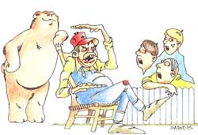

WELL SIR, ONE MORNING WHEN THE fellas were swapping yams on the front porch of the Plumtree Crossing General Store, young Billy Parsons looked over at old man Bartlett (who holds the honor of bein' the biggest liar in these parts) and asked, simply:
"Ott, how'd you ever learn to lie so good?"
Ott was so took back by such a straightforward question that he forgot hisself and actually told the truth:
BILLY, I RECKON IT GOES BACK TO when I was nine, and my Pa took me on a fishing trip down to the Okefenokee Swamp. We rode in on an old three-track road, past turpentine pines and peat-bog cypress. Finally, we reached a camp on the Suwannee River run by a six-foot-tall, snake-thin, fast talking, barefoot swamper named Lem Griffis. As soon as we settled around his kerosene lantern, Lem looked up (he'd been cleaning his toenails with a pocketknife) and started lying.
"Good thing you didn't get here last night-the mosquitoes were so thick I swung a pint cup and caught a quart of 'em. See that 1811 rifle up over the doorway? I've owned that since it was a pistol. I was born in this cabin myself-helped my daddy build it."
When he saw my eyeballs bug out, he added, "Before that I lived across the river."
My pa piped up, "How's the fishing this year, Lem?"
Griffis answered in a swirl of words so fast that I didn't hear them all until two minutes after the last one was done. "Well, yesterday a fella I guided caught a bass so big the scales couldn't hold'im. The picture alone weighed 11 pounds. Now, I ain't had so much luck myself I was fishing on Mud Lake the other day, and I hung a great big fish. He took off for the swamp like a rabbit pulling my boat at 30 or 40 miles an hour. He was smart, too. He saw a stump sticking up in the water and headed straight for it. He slammed my boat against it and smashed it to smithereens. But I didn't let go of the pole. Then that fish commenced to pull me over the water so fast my pants began to smoke. Before long, they blazed up. If I hadn't had to turn loose my pole to splash water on my pants, why, I'd have caught that hawg for sure."
For the next seven days that fast-yapping guide told us stories. I don't remember if we caught anything big enough to bait a minnow--I was too busy listening.
He'd talk about the weather. "It was so dry in the Okefenokee last summer that there were only two fish left, and both of them were sitting on a log spitting in one another's eyes to keep from dying of thirst. It was so dry I had to draw water from the well and go into the swamp and sprinkle the alligators. Alligators get powerful unhappy when it doesn't rain, because their hides dry out and begin to itch. Sometimes, when the well ran dry and I couldn't sprinkle the gators, I'd go out with a long-handled rake and scratch their backs myself. That got to be a nuisance, though, because they'd follow me home. I couldn't eat supper in peace, what with all those gators rubbing up against my legs, begging to be scratched."
He'd talk about hunting: "I used to coon hunt a lot. I had a good coon dog; he often treed five or six coons up one tree. One day he treed up a large, tall, branchy tree, and it was just coons, coons all over. I started at the top to shooting 'em out. When I got down to the bottom, my pile of coons was higher than the tree-the last one I shot had to fall 90 feet straight up to be on top.
"Another time that dog treed 99 coons up a little seedling pine."
"Why don't you just go ahead and say 100 coons?" I asked. (Billy, I was a bit young and innocent back then.)
"I ain't going to lie to you about one coon," he replied. "But I'll tell you something else. You know how to catch a bear?"
"No," I said. (See what I mean?)
"You grab him by the tail and flip him over on his back." He waited a moment and added, "You got to be quick, though."
Another time he sent me to fetch water from the river. I came back right quick: "I ain't going down there! There's an alligator near the bank!"
Lem said, "Has he got frost on one end and sweat on the other?"
"No."
"Then he ain't very big, is he?"
My Pa broke in. "Go on, son, that gator's probably as scared of you as you are of it."
"In that case, you stay here," Lem said. "That water ain't fit to drink."
By the time we left for home, my head was spun around worse'n a phone cord. I never got it all unkinked, either, because I resolved then and there to follow in that Lem Griffis's footsteps. He died, you know, in '68 after a long illness. The doctor asked him, the day before he went, how he was doing. "Well Doc," said Lem, "I reckon I'm doing all right, but I am slowing down a bit lately. Yesterday I turned over a board in the yard and found three snails under it. I caught one of them, but the other two got away."
AT THAT, ALL THE FELLAS TOOK OFF their hats and observed a moment of respectful silence. Lem Griffis, the biggest durn liar in the Okefenokee, knew how to go.
|
 |
|
|